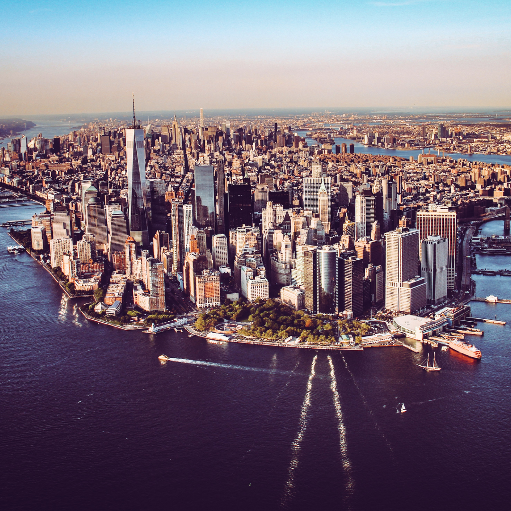
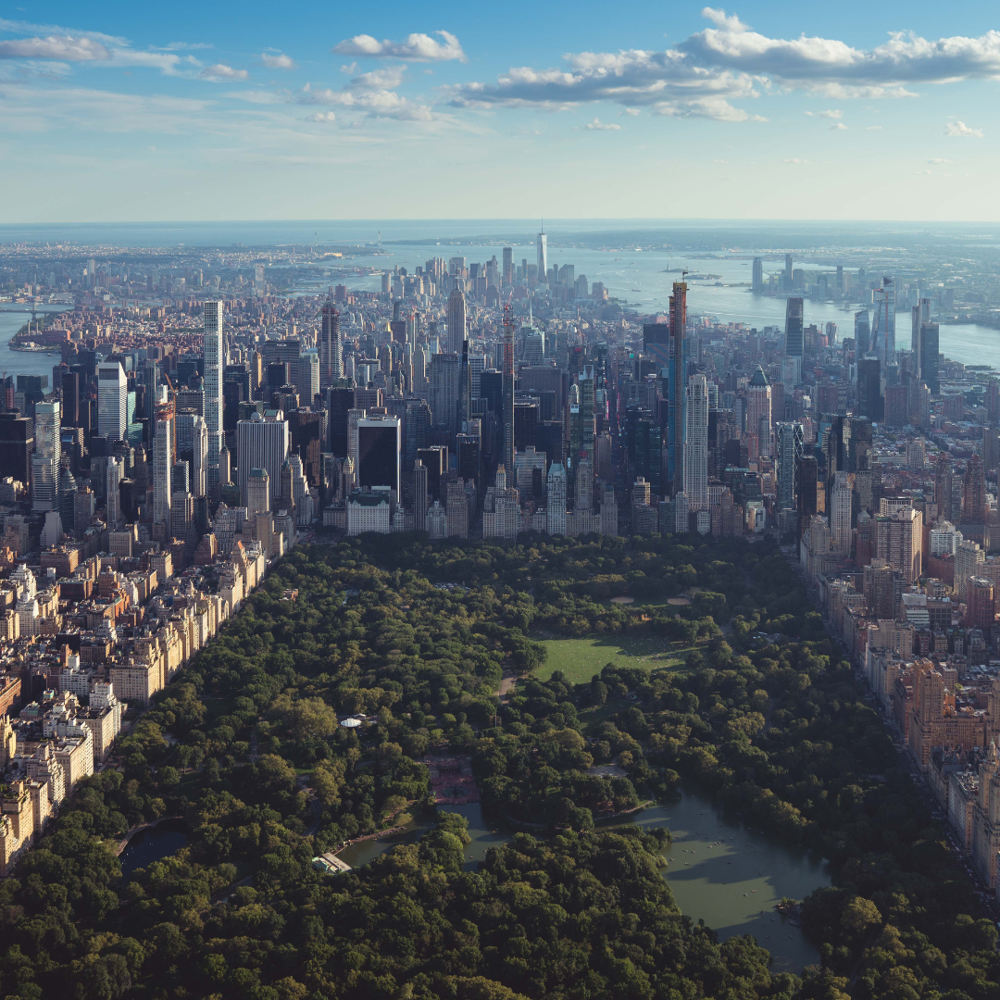
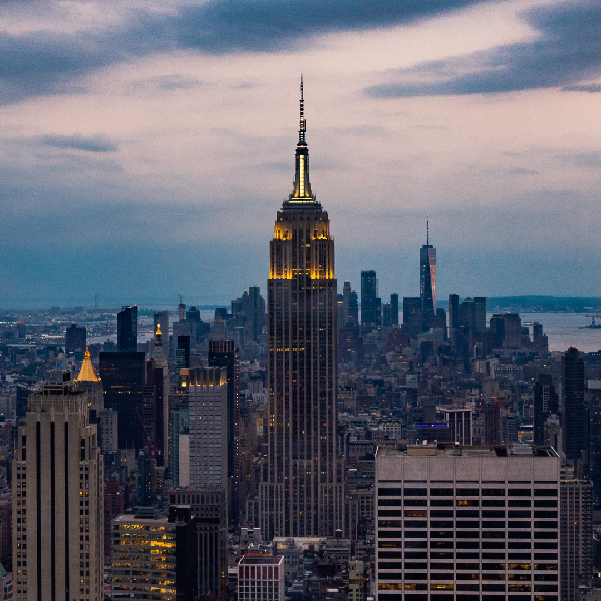
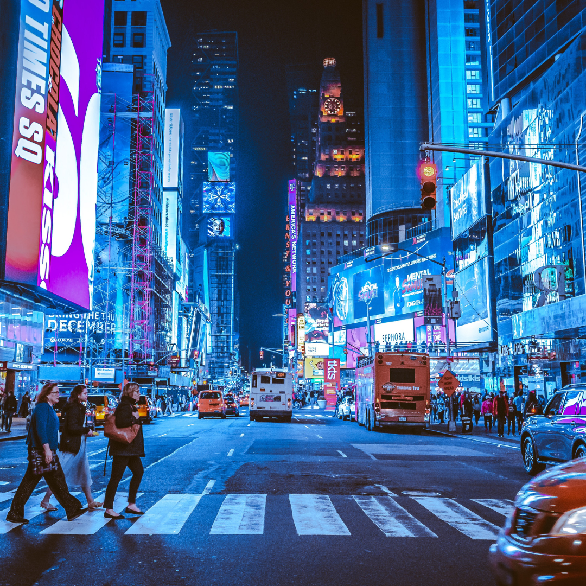

NEW YORK CITY
When people think of the most iconic city in the United States, New York City is what comes to mind. As the most populous city in the country (8.5 million people), New York City has the world's two largest stock exchanges and is known for having some of the world's most renowned educational facilities.
Central Park

Found in the midst of
Manhattan island, Central Park
covers around 3.5 square
miles and stretches across
843 acres of land
Just like the rest of New York
City, Central Park has been
featured in over 350 films and
counting over the years. That's
why it holds the title of most
filmed public park in the world.
Empire State Building

On a clear day, the Empire State
Building offers 80 miles of
visibility, allowing you to see
New York, Connecticut,
Massachusetts, New Jersey
and Pennsylvania.
The top of the Empire State
Building is used for
broadcasting the majority of
commercial TV stations and FM
radio stations in New York City.
Times Square

Formerly named Longacre
Square, it was renamed in April
1904 after the New York Times
moved its headquarters to the
Times Building, now called One
Times Square.
Nicknames include 'The
Crossroads of the World' and
reportedly 'The Tenderloin'
because it was supposedly the
most desirable location in
Manhattan in the 1920s.